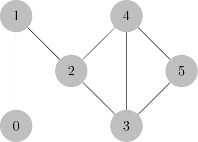
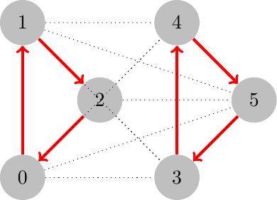
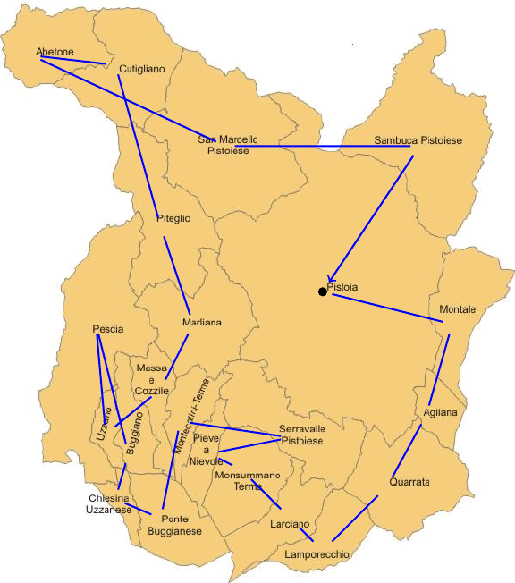
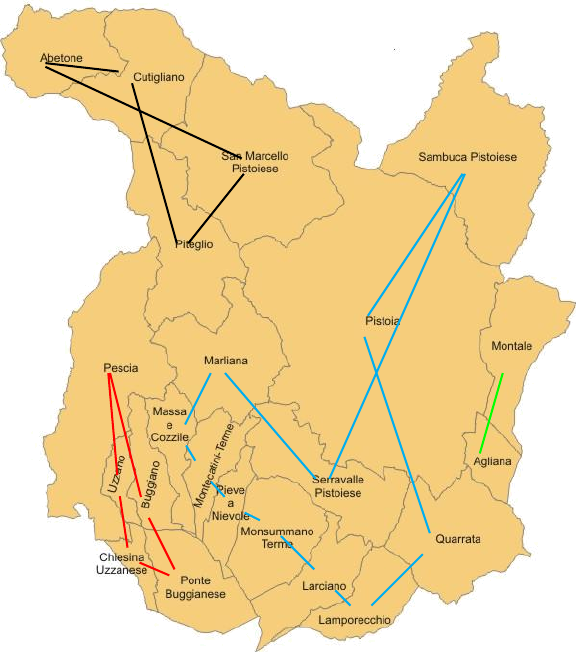
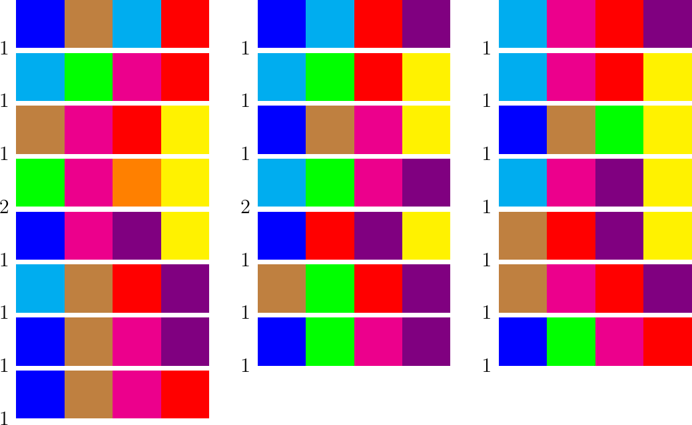

\(\newcommand{\R}{{\mathbb{R}}}\) \(\newcommand{\Z}{{\mathbb{Z}}}\) \(\newcommand{\N}{{\mathbb{N}}}\) \(\newcommand{\var}[1]{{\color{red}{\mathbf{#1}}}}\) \(\newcommand{\param}[1]{{\color{blue}{#1}}}\) \(\newcommand{\mathsc}[1]{{\normalfont\textsc{#1}}}\) \(\def\sc#1{\dosc#1\csod}\) \(\def\dosc#1#2\csod{{\rm{#1{\rm\small #2}}}}\) \(\newcommand{\set}[1]{{\sc#1}}\) \(\newcommand{\mathvar}[1]{\var{#1}}\) \(\newcommand{\half}{{\small{\frac{1}{2}}}}\)
23. Sequencing problems: the Traveling Salesperson Problem¶
A sequencing problem arises when the decision maker needs to choose the “best” ordering for a set of objects or in which sequence to perform a set of operations. The problem consists in determining a permutation among all feasible ones; to each permutation a cost is associated, and the problem, in its basic formulation, consists in the search for the least cost feasible permutation.
There exist various formulations for sequencing problems, the most common of which corresponds to the case where the cost of a permutations is given by the sum of costs associated to contiguous pairs in the sequence. To be more concrete, a typical sequencing problem is encountered in transport logistics (and gives the name of traveling salesperson, in short, TSP, to the model): a driver needs to visit a set of destinations (to deliver or collect parcels); there is no problem of capacity. The only requirement is that every destination is visited once and, at the end of the tour, the driver returns to the starting base station. Thus the problem can be seen as that of sequencing the visits, in order to spend as little as possible in the overall travel. The total cost, in this case, is composed by the sum of the cost incurred in moving from one destination node (or from the base station) to the following one in the sequence, or to the base station when the tour is terminated.
This is perhaps one of the best known and most studied research problem in Operations Research. The interest in this problem arises both from the fact that it is a problem which is very simple to describe, but considerably complex to solve, and from the fact that the applications of the salesman are manifold and not limited to delivery and / or problems collection of goods.
A possible formalization of the problem can be obtained in following way. Consider a directed graph whose nodes are cities (or customers) to be visited. We assume that the graph is complete, which means that there exists an arc connecting each pair of nodes. Sometimes this is not the case: in a road network, as an example, only some pairs of cities are connected directly by a road. In graphs which are not complete, a path which goes through each node once and only once might not exist:

It is evident that, in this figure, no path exists which, starting from node 0, goes through nodes 1-5 and back to 0 without passing more than once over a node. By the way: a path which satisfies this requirement is called an Hamiltonian path. In some applications the constraint of not passing more than once through a node might be relaxed. In the traveling example, it is important to visit each location to deliver or collect parcels; however, it not forbidden to pass again through an already visited node, on the way to a different destination. We may thus create a new, complete, graph in which the arc between two nodes represented a “shortest path” between the nodes itself. In other words, a minimum cost path problem is repeatedly solved to find the least cost route from each node to each different node in the graph. Then, if the graph is connected, a complete graph can be defined in which arc costs, representing optimal paths, connect each pair of nodes. Thus it is always possible to find hamiltonian paths.
From now on, let us assume that the graph is complete, and that costs associated to each arc are non negative. In order to formulate the optimization problem we associate an indicator variable to each arc: \(\mathvar{\delta}_{ij}\). Constraints need to be defined in such a way that this variable is equal to 1 if and only if the route prescribes to visit node \(j\) immediately after having visited node \(i\). Assuming the constraints have been written, the objective function is simply written, exactly in the same way as in the minimum cost path problem:
In the above objective, \(E\) is the set of arcs in the graph. If nodes are denoted by \(V = \{0,1, \ldots, n\}\), then \(E = \{(i,j) \in V \times V : i \ne j\}\).
For what concerns the constraints, first observe that the tour must touch each node once; thus, referring to a network flow problem, the total flow in and out of each node should be equal to 1. That is, one and only one arc of a feasible tour will enter each node and one and only one arc will exit from it. In formulae:
It is easily recognized that the structure of these two groups of constraints is that of matching constraints (on a graph which, however, is not bipartite). Generic (non bipartite) weighted matching problems are easily solvable, and efficient algorithms do exist. Unfortunately these constraints, although necessary for a feasible solution, are not sufficient to constrain the indicator variables to identify a single closed tour. The following example shows the situation:

In the figure, red arcs corresponds to arcs for which the indicator variable is 1. All matching constraints are satisfied by this solution, but it does not represent a feasible solution, as the proposed path is not a unique cycle. We thus need to introduce special purpose constraint to eliminate sub-cycles from feasible solutions. A sub-cycle is a closed circuit which does not contain the origin node.
23.1. Sub-tour elimination constraints¶
The first technique consists of a labeling the nodes, i.e., to assign a new variable to each node. The idea is to assigns a variable to each node and, by means of suitable logical constraints, force the label assigned to a node to be strictly greater than that assigned to its direct predecessor along the path. Let us denote by \(\var{y}_i\) the variable associated to node \(i\). Then we would like to impose logical constraints:
\begin{align*} \mathvar{\delta}_{ij} = 1 & \implies \var{y}_j > \var{y}_i \end{align*}Assume that a sub-tour \(v_1, v_2, \ldots, v_k, v_{k+1}=v_1\) exists in a solution. The logical constraints above would then imply:
\begin{align*} \mathvar{\delta}_{v_1v_2} = 1 & \implies \var{y}_{v_2} > \var{y}_{v_1} \\ \mathvar{\delta}_{v_2v_3} = 1 & \implies \var{y}_{v_3} > \var{y}_{v_2} > \var{y}_{v_1} \\ \dots \\ \mathvar{\delta}_{v_{k}v_1} = 1 & \implies \var{y}_{v_1} > \var{y}_{v_k} > \var{y}_{v_1} \end{align*}which is impossible. Thus it has been proven that the logical constraints make any tour infeasible. However it should be recalled that a tour should be allowed, namely one which returns to the base station. So it is necessary to impose the logical constraints for each pair of nodes, provided that the second one is not the origin:
\begin{align*} \mathvar{\delta}_{ij} = 1 & \implies \var{y}_j > \var{y}_i & \forall\,i, \forall\,j \ne 0 \end{align*}In practice, replacing the “strictly greater” constraint with \(\geq 1\), the constraints become
\[ \mathvar{\delta}_{ij} = 1 \implies \var{y}_{j} \geq \var{y}_{i} +1, \quad j \ne 0 \]To correctly formulate this constraint, we can proceed in the following way: if \(\mathvar{\delta}_{ij} = 1\) , the difference \(\var{y}_{j} - \var{y}_{i}\) must be greater than or equal to one (or to any other positive quantity). Otherwise, it is necessary to find a lower bound on the same difference in such a way that the generated constraint is redundant. If we fix, arbitrarily, \(\var{y}_0=0\), it can be observed that
\begin{align*} \var{y}_j & \leq n & \forall\, j \\ \var{y}_j & \geq 1 & \forall\, j \ne 0 \end{align*}Thus the logical constraint can be formulated as:
\begin{align*} \var{y}_j - \var{y}_i & \geq \mathvar{\delta}_{ij} + (1-n) (1-\mathvar{\delta_{ij}}) & \forall\,i \in 0,n, \forall\, j \in 1,n \\ \var{y}_0 & = 0 \end{align*}The addition of these constraints excludes the possibility of cycles not including node 0. We may also notice that it is not required to impose integrality constraints on the variables \(\var{y}\); in fact they might also be non integer, if necessary. In the above model, as the source is assigned label 0, the highest possible label is \(n\) and the increment is one, it turns out that in any feasible solution the values of variables \(\var{y}\) will be consecutive integers, i.e., a sequential numbering of the visited nodes.
In the following we give a formulation of the model, using the formulation just introduced:
tsp.mod¶set NODES ordered; set ARCS := {(i,j) in NODES cross NODES: i != j}; param n := card(NODES) - 1; param Source symbolic in NODES; param Cost{ARCS}, default Infinity; var delta{ARCS}, binary; var y{NODES} >=0; minimize Total_cost: sum {(i,j) in ARCS} Cost[i,j] * delta[i,j]; s.t. input {j in NODES}: sum {i in NODES: (i,j) in ARCS} delta[i,j] = 1; s.t. output {i in NODES}: sum {j in NODES: (i,j) in ARCS} delta[i,j] = 1; s.t. labeling{(i,j) in ARCS: j != Source}: y[j] - y[i] >= n * delta[i,j] + 1 - n;tsp.jl¶# to be doneAn example of the execution of this model can be obtained, with the already used dataset Pistoia.dat, using the followign script:
tsp.run¶model tsp.mod; param time{ARCS}; param distance{ARCS}; data Pistoia.dat; let {(i,j) in ARCS} Cost[i,j] := time[i,j]; let Source := 'Pistoia'; option solver gurobi; option omit_zero_rows 1; option omit_zero_cols 1; option gurobi_options 'cuts=3 presolve=2 logfreq=5 outlev=1'; solve; display y;tsp.run¶# to be donewhich gives the following results:
tsp.out¶Gurobi 9.1.1: cuts=3 presolve=2 logfreq=5 outlev=1 Gurobi Optimizer version 9.1.1 build v9.1.1rc0 (linux64) Thread count: 2 physical cores, 4 logical processors, using up to 4 threads Optimize a model with 485 rows, 484 columns and 2247 nonzeros Model fingerprint: 0x7dea6626 Variable types: 22 continuous, 462 integer (462 binary) Coefficient statistics: Matrix range [1e+00, 2e+01] Objective range [4e+00, 7e+01] Bounds range [1e+00, 1e+00] RHS range [1e+00, 2e+01] Presolve removed 21 rows and 1 columns Presolve time: 0.03s Presolved: 464 rows, 483 columns, 2184 nonzeros Variable types: 21 continuous, 462 integer (462 binary) Presolve removed 1 rows and 0 columns Presolved: 463 rows, 483 columns, 2163 nonzeros Root relaxation: objective 1.947098e+02, 53 iterations, 0.00 seconds Nodes | Current Node | Objective Bounds | Work Expl Unexpl | Obj Depth IntInf | Incumbent BestBd Gap | It/Node Time 0 0 194.70984 0 35 - 194.70984 - - 0s 0 0 221.88938 0 32 - 221.88938 - - 0s 0 0 221.96636 0 40 - 221.96636 - - 0s 0 0 221.96636 0 40 - 221.96636 - - 0s 0 0 222.93048 0 38 - 222.93048 - - 0s 0 0 222.93048 0 38 - 222.93048 - - 0s 0 0 225.78232 0 47 - 225.78232 - - 0s H 0 0 276.9700000 225.78232 18.5% - 0s 0 0 226.06000 0 42 276.97000 226.06000 18.4% - 0s 0 0 227.05429 0 14 276.97000 227.05429 18.0% - 0s 0 0 227.21500 0 16 276.97000 227.21500 18.0% - 0s 0 0 227.21500 0 16 276.97000 227.21500 18.0% - 0s 0 2 227.48333 0 16 276.97000 227.48333 17.9% - 0s H 29 32 271.3800000 227.48903 16.2% 11.8 0s H 57 60 270.2100000 227.48903 15.8% 9.0 0s H 86 89 260.9800000 227.48903 12.8% 7.3 0s H 121 119 260.8100000 227.48903 12.8% 7.0 0s * 319 257 38 255.9900000 228.17841 10.9% 8.3 0s * 320 256 36 255.6400000 228.17841 10.7% 8.3 0s * 497 274 13 248.0900000 228.73683 7.80% 8.0 0s * 531 288 15 247.7700000 228.73683 7.68% 7.9 0s H 753 367 245.8100000 229.38000 6.68% 8.6 0s H 762 354 245.6500000 229.38000 6.62% 8.5 1s * 1006 288 31 245.6400000 243.74131 0.77% 9.7 1s Cutting planes: Learned: 7 Gomory: 39 MIR: 6 StrongCG: 1 Flow cover: 30 Zero half: 24 Explored 1136 nodes (11161 simplex iterations) in 1.51 seconds Thread count was 4 (of 4 available processors) Solution count 10: 245.64 245.65 245.81 ... 270.21 Optimal solution found (tolerance 1.00e-04) Best objective 2.456400000000e+02, best bound 2.456400000000e+02, gap 0.0000% Gurobi Optimizer version 9.1.1 build v9.1.1rc0 (linux64) Thread count: 2 physical cores, 4 logical processors, using up to 4 threads Optimize a model with 485 rows, 484 columns and 2247 nonzeros Model fingerprint: 0xa0547d93 Coefficient statistics: Matrix range [1e+00, 2e+01] Objective range [4e+00, 7e+01] Bounds range [1e+00, 1e+00] RHS range [1e+00, 2e+01] Iteration Objective Primal Inf. Dual Inf. Time 0 2.4564000e+02 2.625000e+00 0.000000e+00 0s 21 2.4564000e+02 0.000000e+00 0.000000e+00 0s Solved in 21 iterations and 0.00 seconds Optimal objective 2.456400000e+02 Gurobi 9.1.1: optimal solution; objective 245.64 11161 simplex iterations 1136 branch-and-cut nodes plus 21 simplex iterations for intbasis y [*] := Abetone 19 Marliana 16 Piteglio 17 Agliana 2 MassaCozzile 15 PonteBuggianese 10 Buggiano 12 MonsummanoTerme 6 Quarrata 3 ChiesinaUzzanese 11 Montale 1 SambucaPistoiese 21 Cutigliano 18 MontecatiniTerme 9 SanMarcelloPistoiese 20 Lamporecchio 4 Pescia 13 SerravallePistoiese 8 Larciano 5 PieveANievole 7 Uzzano 14 ;The following figure reports the optimal tour (based on estimated travel times):

Some comments are in order. First we can notice from the graph above that the path “crosses itself”, which is something which might be considered as negative at first sight. But it should be reminded that the arrows represented in the figure are not representative of the actual path followed by the driver, but just are meant to represent the correct visit sequence. As an example, the apparent crossing close to Cutigliano is not real, as the best path San Marcello Pistoiese to Abetone and then Piteglio, goes through Cutigliano, and similarly for othe rapparent crossings.
Another observation is the speed by which this problem is solved. Indeed this is a small instance. However, the fact that, with this formulation, it was solved in a very short CPU time, is not due to the formulation, but to the advanced optimization software employed. The solver used in the example automatically adds a large number of cuts (valid inequalities) to improve the formulation, which, in itself, is very weak. If we used, e.g., the CBC solver, which is already a very advanced implementation, the same instance would be solved in 17 seconds, with over 150000 simplex iterations. In fact, the formulation just presented does not allow to solve any problem of size, say, larger than 50. Different formulations will be introduced later in this chapter.
Although “weak” from the polyhedral point of view, the constraint just presented are important as they allow for the formulation of additional constraints, useful in many applications. In fact, in place of the unit increase of variable \(\var{y}_j\), an increase equal to, say, the travel time of arc \((i, j)\), or the sum of the time spent in node \(i\) plus the travel time on the arc. In this case, variable \(\var{y}_j\) would have the meaning of the arrival time at node \(j\). Having this variable in the model easily allows to insert temporal constraints like, e.g. requiring that a node must be visited in a specific time window, or requiring that a node is not visited before another node . An application of models of this kind can be thought, for example, for the scheduling home visits of patients by one medical or nursing staff. In order to implement a model of this kind, the logical constraints are to be slightly modified. The lower bound on the difference of visit times of two consecutive nodes must be computed in function of the travel (and visit) times. For example, we might assume that there are an earliest start and return times, denoted by \(\param{T_{\min}}, \param{T_{\max}}\) and, assuming that visiting a node required \(\param{T}_i\) and that the travel time between two nodes is \(\param{T}_{ij}\), the logical constraint becomes
\begin{align*} \var{y}_j - \var{y}_i & \geq (\param{T}_i + \param{T}_{ij})\mathvar{\delta}_{ij} - (\param{T_{\max}} - \param{T_{\min}}) (1-\mathvar{\delta_{ij}}) & \forall\,i \in 0,n, \forall\, j \in 1,n \\ \var{y}_0 & = \param{T_{\min}} \end{align*}The TSP problem has been the subject of very intense research in all recent years; there exist many different formulations of the subtour elimination constraints (see, e.g., Oncan2009 for a list of 24 different models). One of the best known formulation directly proceeds without the need for any additional labeling. Let \(\set{S}\) be any not empty subset of the set of nodes which does not coincide with the set of nodes: \(\set{S} \subset V, S \ne \emptyset\). In order to prevent any tour within the set \(\set{S}\) it is sufficient to require that at least one arc in the solution exits (or enters) this set. This can be done through the constraint:
\begin{align*} \sum_ {i \in \set{S}, j \not \in \set{S}} \mathvar{\delta}_{ij} \geq 1 \end{align*}Such a constraint should theoretically be imposed for each set non empty subset of the set of nodes, with the exception of the whole set. However, it is easily seen that, for symmetry, imposing the constraint for a set is equivalent to imposing the same constraint to the complementary set, so that we can limit the set \(\set{S}\) to have a cardinality which no more than one half the number of nodes. Moreover, when the set is a singleton, the constraint is already included in the model as an assignment constraint. Thus, the required sub-tour elimination constraints are:
\begin{align*} \sum_ {i \in \set{S}, j \not \in \set{S}} \mathvar{\delta}_{ij} &\geq 1 & \forall \, \set{S} \subset V: 2 \leq |S| \leq \lceil (|V|/2) \rceil \end{align*}Despite this reduction, the number of constraints to be added to the formulation is astronomical and grows exponentially fast as the size of the problem grows. The total number of constraints remains \(O(2^{|V|})\). It is therefore impossible to add all of these constraints in a formulation of the problem. On the other hand it can be proved that these constraints are rather strong and their addition to the original formulation would lead to a model whose linear relaxation is quite good. A possibility, exploited in most recent implementations is to dynamically insert only those inequalities which are violated in the solution of current relaxation. This is done in an automatic way within so-called Branch and Cut implementations. The general idea is to solve an initial relaxation of the problem, and then calling a procedure which determines if there exists any of the sub-tour elimination constraints which is violated. If the current solution is binary, this task is quite easy, as it just requires to identify cycles in the current solutions: the nodes of any cycle which does not include the source node form a set \(\set{S}\) associated to a violated inequality which can be added to the formulation. More complex is the case in which the current solution is not binary: a separation procedure needs to be implemented which is capable of finding a violated inequality which cuts off the current solution. This topic is out of the scope of this volume. Just as an illustrative example, if in the example used before we drop the labeling constraints and just solve the relaxed problem with only the constraints requiring one unit flow in and out of each node, the following solution is obtained:
This solution, as it can be immediately seen, contains various sub-tours. Its total cost is 192.23, which is thus a lower bound on the optimal solution value. Adding to the formulation only the sub-tour elimination constraints associated to the 10 sub-tours in this solution, and solving the problem again, the following solution is found, which is again infeasible, but starts to get close to a single tour:

This process can be continued and eventually the optimal solution is found; this happens well before having added all of the possible sub-tour elimination constraints.

The applications of the traveling salesman model are many. Obviously, the main application field is in transportation logistics, where the model can be applied to sequence deliveries, garbage collection, home care visits, … Problems connected with street cleaning or snow removal are only apparently similar: in this case it is required that each arc is visited at least once, while in the traveling salesperson each node is visited at least once. This problem will be shortly dealt with later on.
Among the many applications, it is important to recall in particular those related to industrial production. It is quite common, in production, that some jobs can be worked on a machine, or a plant, in any arbitrary ordering, within, say, a single production period (a day, as an example). However, it is also frequently the case that after a job has been completed, before starting the next one some setup is needed, and production needs to be stopped. Frequently, this setup time depends both on the job just concluded and on the next one. Consider, as an example, a drilling machine: after drilling a hole in a plate, it is necessary to change the tool in order to drill holes of different sizes: this retooling requires a time which depends on the relative sizes of the two different tools to be mounted and dismounted from the machine. In a different environment, consider the problem of establishing the optimal sequence of surgical operations in an hospital: after an operation ends, and before the following one can start, some time is needed for sterilization and for changing the equipment in the operating room. These setup actions have a duration which might depend by the two surgeries involved. In these examples, the nodes to be “visited” are the different industrial or surgical operations; the arcs connect different operations which might be scheduled in sequence. The cost of each arc is the amount of time wasted in setup. The traveling salesperson solution allows us to find how to sequence all of the operations so that the total time spent in setup is minimized. This has great benefits in terms of productivity, in the first case, and, in the hospital case, allows the planner to save time on setup and have more time allowed for surgeries.
- application
Sequencing in industrial production Consider the problem of sequencing operations in a machine used to color a material. Assume a list of jobs ready to be processed is available, each characterized by a set of colors. The plant is organized in such a way that, when a job is finished and the next one has to be prepared to start, some colors need possibly to be changed. This change requires a setup time. If colors are liquid, it might be necessary to clean the containers and to fill them with a new color, or to extract the color container and insert a new one. In textile industries, color changes require dismounting a set of threads and substituting them with another set. In general, the time wasted in this operation depends on the number of colors changed. In painting, it might also depend on the colors themselves, as cleaning some colors from a container might require different times depending on the color type. In this latter case, the graph of the TSP is asymmetric. Consider as an example the case of coloring tissues in 4 colors, and assume that the jobs to be worked on a day are represented by the following figure:

In this figure the standard is to process jobs in the order given by reading the table from left to right, top down. At the left of each job a number denotes the number of colors to be changed before that job begins. For the first job this number is 4, as, considering the last job, all of the colors need to be changed. The second job in this sequence has a setup cost 2, as it can be seen that from job 1 to job 2 only two colors have to be changed, while blue and brown can be left unchanged. It should be clear how to compute setup times for all pairs of jobs. Using this sequence, which was built using a lexicographic ordering of job colors, a total of 35 color changes is needed.
If we run the TSP model with the data corresponding to this job set, the following sequence of jobs is obtained:

This sequence requires only 24 color changes, with a saving of more than 30% of the setups.
In the examples we always assumed an initial state is known and that at the end of the tour, the same state needs to be restored. In the geographical TSP, the start city, or base station, is known and the tour should terminate in that node; in production or in surgery, we assume the initial setup is given and that at the end of the day the same setup needs to be restored. If this assumption were false, we could easily extend the model to include any start and end node, possibly different one from the other. If the initial node coincides with the final one, then clearly choosing any different starting node, the same tour will remain optimal. If instead we do not know the initial and final nodes, and they are different, we might insert a dummy node (a repository) connected to every other node in the graph (in both directions) with zero cost arcs.
This part on the TSP problem is necessarily to short, as this is one of the most deeply explored problems in Optimization and Operations Research. We hope we have given at least the feeling on how relevant this problem is and of how many practical problems can be profitably solved through a model like this one. We did not mention many other possibilities, like, e.g., organizing the tour of an automatic machine for the production of VLSI (Very Large Scale Integrated) circuits: here the machine needs to place thousands of components on a chip, and the TSP tour could save a significant amount of time in moving the tool from one location to another one. A very large set of examples, software, historical notes on the TSP problem can be found in the Concorde web site.